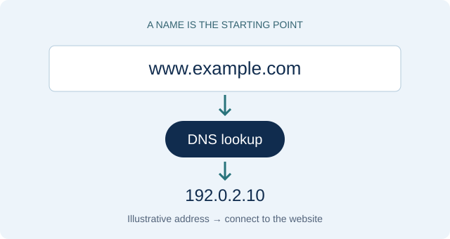

DNS Basics
Follow a lookup and compare common record types.
A beginner's guide to the Domain Name System
How a familiar website name becomes an address computers can use.
The Domain Name System, or DNS, helps your device find the IP address for a website name. You can type a name like example.com instead of remembering a server's numeric address.
DNS also helps with email and other Internet services. Its information is spread across many servers, with different organizations managing different parts.
Follow a DNS lookup →
A website can keep the same name even if its IP address changes. The administrator updates its DNS records, so visitors can keep using the name they already know.
Read more: ICANN: About Domain Names · Cloudflare: What is DNS?
example.com.Follow a lookup and compare common record types.
Understand false answers, validation, and encryption.
Review seven ideas with practical examples.
Explore standards and beginner learning materials.
Learn about me and my goals for this class project.